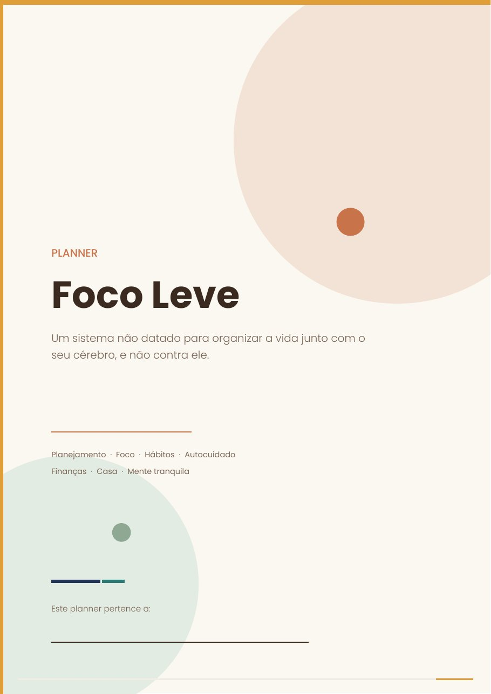

Organize o ano junto com o seu cérebro.
Para quem tem TDAH, desconfia que tem ou vive com a cabeça cheia de abas abertas. Uma página por dia, só três prioridades e um passo a passo para cada momento do mês.


Você já comprou um planner, usou duas semanas e largou?
Se você se reconhece em pelo menos duas destas, este planner foi feito para você.
Não é preguiça. É o jeito que o seu cérebro funciona.
Planejar, começar, lembrar e manter o foco dependem das funções executivas. Quando elas falham com frequência, força de vontade não resolve.
O que funciona é tirar tudo da cabeça e colocar num sistema do lado de fora: simples, visual e que não te pune quando você falha um dia.
Você nunca precisa adivinhar o próximo passo.


826 páginas, já na ordem de uso.
Do começo do ano ao fechamento, com um kit de ferramentas para os dias de cabeça cheia.

O que o planner te ajuda a fazer
O Planner Foco Leve não é só um caderno. É um aliado para a sua rotina, no seu ritmo.
É para você se…
Não é para você se…
Uma ferramenta para cada desafio do TDAH.
Cada página foi pensada para um ponto em que o TDAH costuma travar a rotina.
Garantia incondicional de 7 dias
Use o planner, teste as páginas e veja se ele funciona para você. Se não gostar, peça o reembolso pela própria Hotmart dentro do prazo e receba 100% do valor de volta, sem perguntas.
Perguntas frequentes
Como recebo o planner?
Logo após a confirmação do pagamento, você recebe o acesso por e-mail e baixa os arquivos em PDF.
Posso usar no tablet ou no celular?
Sim. Abra o PDF em um app de anotações como GoodNotes, Notability, Xodo ou Samsung Notes. O índice e os links entre as páginas são clicáveis.
Preciso imprimir as 826 páginas?
Não. Imprima o começo do ano e o primeiro mês. Quando o mês estiver acabando, imprima o próximo. O Pacote do Mês serve exatamente para isso.
Posso começar em qualquer mês?
Pode. Comece pelo mês em que você está e use o Pacote do Mês para os meses que quiser.
Preciso ter diagnóstico de TDAH?
Não. As ferramentas ajudam qualquer pessoa que tenha dificuldade com foco, rotina e organização.
É assinatura?
Não. É um pagamento único, sem mensalidade.